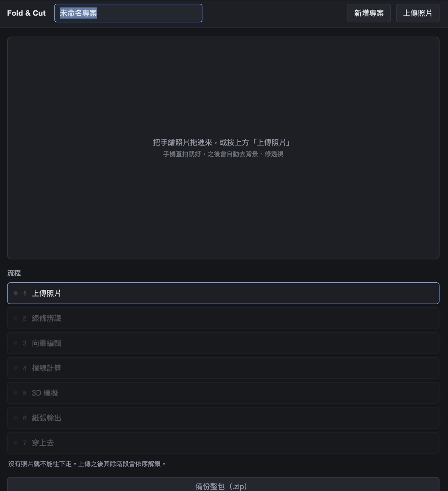
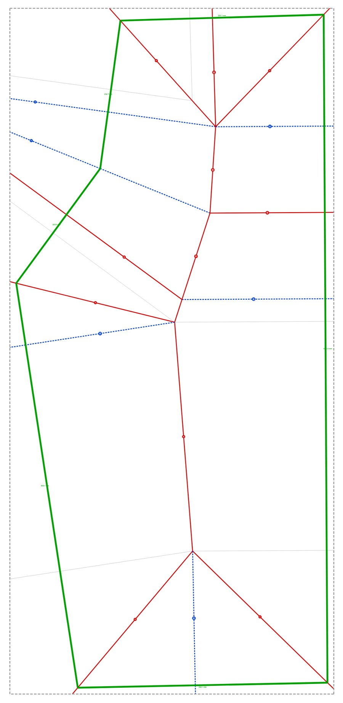
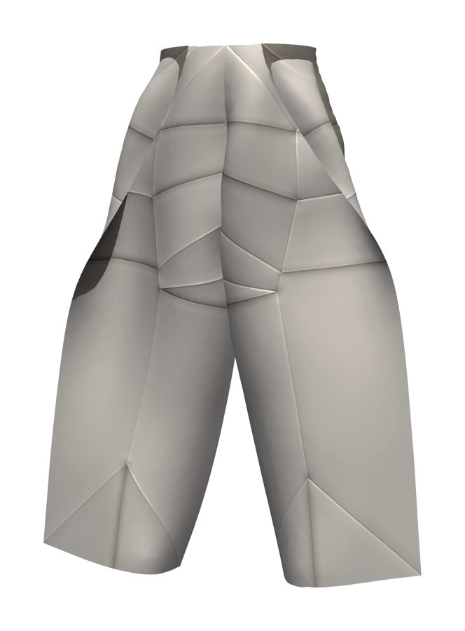
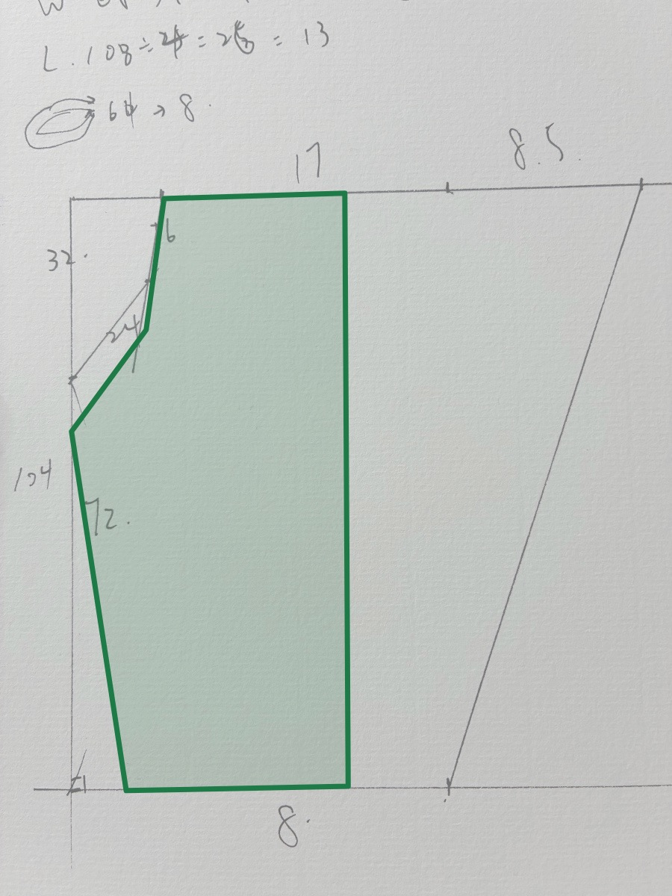
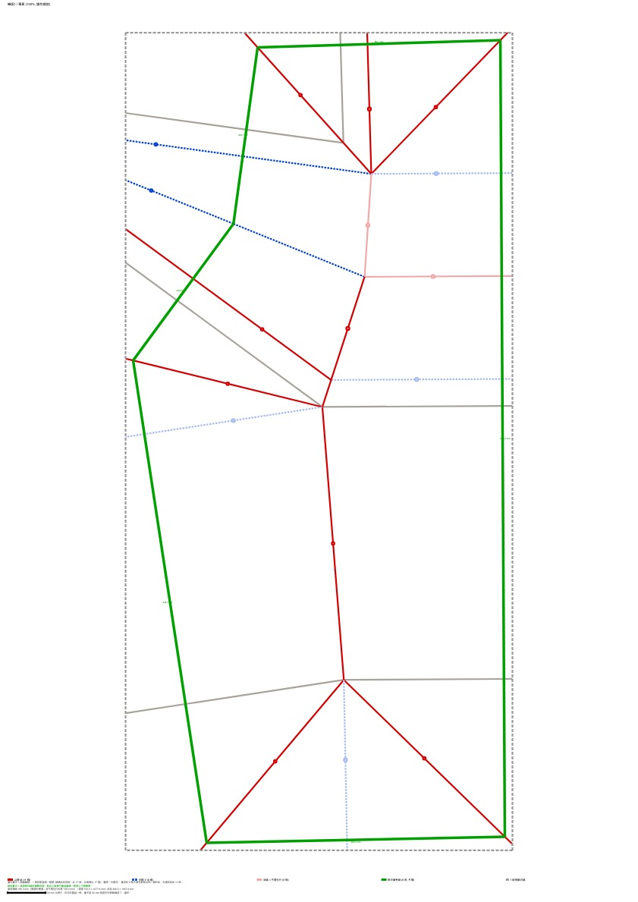
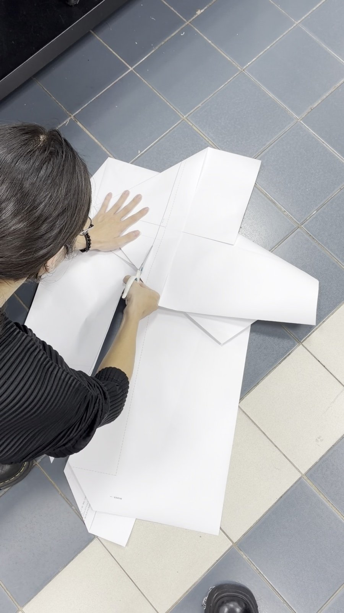
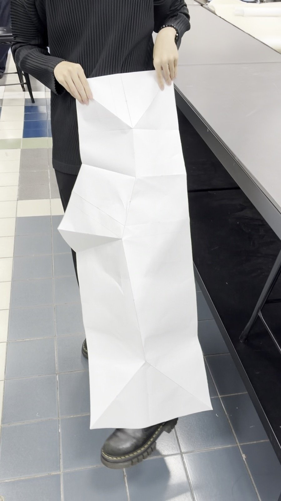

方法的核心是數學。AI 是讓它從論文走到工作桌上的輔助。
Erik Demaine 等人在 1998 年前後證明。數學上已經保證「做得到」，難的是摺線要摺在哪裡，手算不出來。
MIT 課程有開源的計算工具，但要用座標操作。我用 AI（Claude）協助寫程式，串成從照片到印紙的網站。
每一張紙都手摺驗證，把數學上「可以」的結果，篩成衣服上「能用」的。
一個打版用的計算網站、照著它摺出來的紙，以及用同樣方法剪布縫成的褲子。

照片描成輪廓、向量編輯修正、算出山谷摺、3D 模擬先摺一次，實際尺寸輸出並標好摺疊順序。

一條線一個編號，照順序摺，沿綠線剪。

四片裁片都是摺好之後一刀剪出來，縫起來的樣子先在 3D 模擬裡確認。




拿完成的褲版實際摺過、剪過，也拿連身裙試過，找出哪裡會卡住。
連身裙需要 158 條摺線，很多短到捏不住，所以目前只有褲版摺得出來。
原本紙要準備裁片的 5 倍大。先把剪線外面用不到的紙裁掉，現在大約 1.2 倍就夠。
布對摺一起剪太厚，會剪歪。所以左片、右片各印一張摺線紙，各剪一次。
每一片裁片，只剪一刀。
形狀越複雜，摺線就越多、越短，最後手會摺不動。所以一張紙只剪一片裁片。